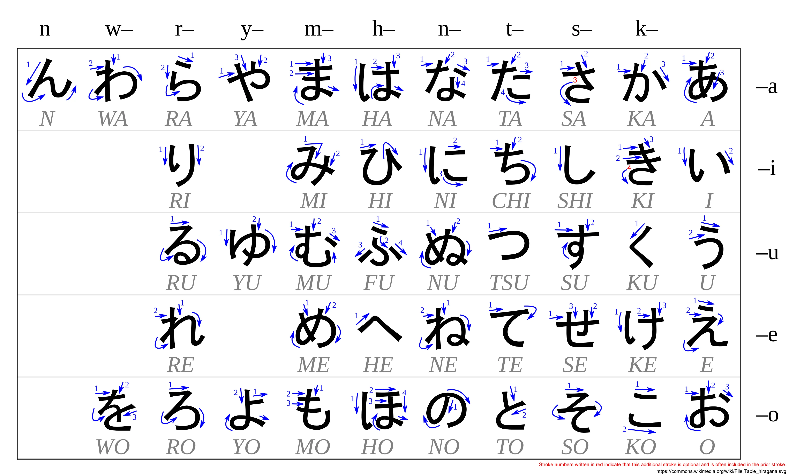

Learning Hiragana is one of the first steps everyone takes when learning Japanese and helps to set a foundation for learning the rest of the language. It plays a very important role in Japanese as it is used for grammatical elements (such as particles and conjugations) and native Japanese words that are not written in Kanji. In total, there are 46 Hiragana characters that we will be learning in this lesson. Below is a table that shows all of their pronunciations and how they are written which is read from right-to-left and top-to-bottom (e.g., あ、い、う、え、お).

While 46 may seem like a big number, it's no more difficult than learning your ABCs in English. Some people have learned Hiragana in a day and others in a week or two. How fast you learn it ultimately depends on you, and there's no right or wrong amount of time. What's most important is that you can read every character; not how fast you learned them. So take your time and do what works for you!
Our recommendation is to study around 5-10 characters a day, but you're free to study as many as you like. Head on over to the あ い う え お section below to begin learning about the most important part of Hiragana; its vowels!
あ い う え お
These are the first five Hiragana that everyone learns; the vowels a-i-u-e-o. Every column after this one uses these sounds, so mastering this column will make learning the rest of the Hiragana much easier.
Below, we'll show you a table with information on each Hiragana character. The Romaji is the roman character that represents the Hiragana. This is used in Romaji input when typing Japanese and in reading aids for beginner Japanese learners. The pronunciation shown is based on similar sounds we have in English and we'll try to link these sounds to words that contain them to aid with your pronunciation.
| Hiragana | あ |
| Romaji | a |
| Pronunciation | ah |
あ is pronounced like "ah." It's similar to the sound you make when a doctor asks you to open your mouth and say "ahh" or the exclamation "ah!"
| Hiragana | い |
| Romaji | i |
| Pronunciation | ee |
い is pronounced like the ee in "feet" or "eel."
| Hiragana | う |
| Romaji | u |
| Pronunciation | oo |
う is pronounced like the oo in "food" or "oops."
| Hiragana | え |
| Romaji | e |
| Pronunciation | eh |
え is pronounced like the e in "met" or "meadow."
| Hiragana | お |
| Romaji | o |
| Pronunciation | oh |
お is pronounced just like the oh in the exclamation "Oh!"
Practice
Now that we've learned how to read and pronounce these characters, let's try recalling and using them!
| As a warm-up, try to repeatedly write the Romaji for the characters that you've just learned. The input will turn green if you get it correct. | ||||
| {あ|a} | {い|i} | {う|u} | {え|e} | {お|o} |
| {い|i} | {う|u} | {え|e} | {お|o} | {あ|a} |
| {え|e} | {あ|a} | {お|o} | {い|i} | {う|u} |
| {お|o} | {い|i} | {あ|a} | {う|u} | {え|e} |
| {う|u} | {お|o} | {い|i} | {え|e} | {あ|a} |
- Now try to match the entire あ column to their romaji in this drag and drop exercise. While you struggle to find the Hiragana character that you're looking for, it'll tell your brain that it's important so you're more likely to remember and recognize it.
- Wait 10 minutes, then try to write the romaji for the entire あ column in this exercise, then click the check answers button at the bottom to see if you got them correct. You'll be using romaji a lot with Japanese IMEs, so it's important to remember if you want to type in Japanese!
- Wait another 10 minutes, then try drawing the entire あ column in this exercise while making sure you follow the stroke order. Drawing can help a lot with memorization, especially if you sound out the character while you're drawing it. If you'd like to draw the same Hiragana multiple times, like an alphabet worksheet, click here for additional practice.
- Feel free to repeat any of these exercises until you have them memorized, while taking a short break (5-10 mins) after each session. It's important to take breaks rather than bombarding your brain with new information non-stop, as breaks can greatly aid with memorization by giving your brain a chance to digest what you just fed it.
※ All of these exercises contain multiple ways to practice. So, if you'd like to switch things up, scroll to the very bottom of the exercise page and click the Change Exercise Type button to change to a different exercise type.
Once you've practiced enough and feel like you've mastered this set of Hiragana, feel free to take a break for the day or move onto the next section to start learning about the か column!
か き く け こ
Next up is the か column which consists of a "k" sound plus the vowels that we learned in the previous section.
| Hiragana | か |
| Romaji | ka |
| Pronunciation | kah |
か is pronounced like the ka in "karate," which is a Japanese word that you may be familiar with... Meaning that you already know how to pronounce か! However, if for some reason you've been living under a rock and have never heard of karate before, the ca in "car" is very close to か's pronunciation.
| Hiragana | き |
| Romaji | ki |
| Pronunciation | kee |
き is pronounced just like "key," and even happens to look like one, too. Coincidence? I think not! It's also pronounced like the kee in "keep."
| Hiragana | く |
| Romaji | ku |
| Pronunciation | koo |
く is pronounced like the ku in "kudos" or the coo in "racoon."
| Hiragana | け |
| Romaji | ke |
| Pronunciation | keh |
け is pronounced like the ke in "ketchup" or "kettle."
| Hiragana | こ |
| Romaji | ko |
| Pronunciation | koh |
こ is pronounced like the co in America's favorite soft drink, "coke" or like the co in "coach."
Practice
Now that we've learned how to read and pronounce the characters in the か column, let's try recalling and using them along with the previous set of characters!
| As a warm-up, try to repeatedly write the Romaji for the characters that you've just learned. The input will turn green if you get it correct. | ||||
| {か|ka} | {き|ki} | {く|ku} | {け|ke} | {こ|ko} |
| {き|ki} | {く|ku} | {け|ke} | {こ|ko} | {か|ka} |
| {け|ke} | {か|ka} | {こ|ko} | {き|ki} | {く|ku} |
| {こ|ko} | {き|ki} | {か|ka} | {く|ku} | {け|ke} |
| {く|ku} | {こ|ko} | {き|ki} | {け|ke} | {か|ka} |
- Now try to match the entire あ and か columns to their romaji in this drag and drop exercise.
- Wait 10 minutes, then try to write the romaji for the entire あ and か columns in this exercise.
- Wait another 10 minutes, then try drawing the entire あ and か columns in this exercise. You can do additional drawing practice here if you like.
- Feel free to repeat any of these exercises until you have them memorized, while taking a short break (5-10 mins) after each session.
Once you've practiced enough and feel like you've mastered this set of Hiragana, feel free to take a break for the day or move onto the next section to start learning about the さ column!
さ し す せ そ
Next up is the さ column which consists of a "s" sound plus the vowels that we learned in the first section. However, there is one exception to note here and that is し, which is pronouced shi instead of si.
| Hiragana | さ |
| Romaji | sa |
| Pronunciation | sah |
さ is pronounced like the sa in "salon" or "safari."
| Hiragana | し |
| Romaji | shi |
| Pronunciation | shee |
し is pronounced like the shee in "sheet" and just like the word "she," as in "She told me how to pronounce し."
As mentioned earlier, this character is an exception, because going by the previous columns you'd expect し to be pronounced like si, but it is not. So remember, when you see し, it is pronounced like "she!"
In some cases, you may see し romanized as si instead of shi, especially on old signs in Japan. This romanization is from the old Kunrei romanization system that Japan previously used and is not as prevalent as it once was. The romanization system that we use on Kantan Japanese to teach you is the Hepburn system which has become the standard romanization system in recent years due to the romanizations closely matching their pronunciations.
| Hiragana | す |
| Romaji | su |
| Pronunciation | soo |
す is pronounced like the soo in "soon" or the su in "sue."
| Hiragana | せ |
| Romaji | se |
| Pronunciation | seh |
せ is pronounced like the se in the number "seven" or the name "Seth."
| Hiragana | そ |
| Romaji | so |
| Pronunciation | soh |
そ is pronounced just like the word "so" or like the so in "soda."
Practice
Now that we've learned how to read and pronounce the characters in the さ column, let's try recalling and using them along with all the previous characters that we learned!
| As a warm-up, try to repeatedly write the Romaji for the characters that you've just learned. The input will turn green if you get it correct. | ||||
| {さ|sa} | {し|shi} | {す|su} | {せ|se} | {そ|so} |
| {し|shi} | {す|su} | {せ|se} | {そ|so} | {さ|sa} |
| {せ|se} | {さ|sa} | {そ|so} | {し|shi} | {す|su} |
| {そ|so} | {し|shi} | {さ|sa} | {す|su} | {せ|se} |
| {す|su} | {そ|so} | {し|shi} | {せ|se} | {さ|sa} |
- Now try to match the entire あ, か, and さ columns to their romaji in this drag and drop exercise.
- Wait 10 minutes, then try to write the romaji for the entire あ, か, and さ columns in this exercise.
- Wait another 10 minutes, then try drawing the entire さ column and the あ and か columns. If you like, you can do additional drawing practice by clicking the Change Exercise Type button at the bottom of these exercises and choosing Extended Drawing Practice.
- Feel free to repeat any of these exercises until you have them memorized, while taking a short break (5-10 mins) after each session.
Once you've practiced enough and feel like you've mastered this set of Hiragana, feel free to take a break for the day or move onto the next section to start learning about the た column!
た ち つ て と
Next up is the た column which consists of a "t" sound plus the vowels that we learned in the first section. There are two exceptions in this column for ち and つ.
| Hiragana | た |
| Romaji | ta |
| Pronunciation | tah |
た is pronounced like the ta in "tacos."
| Hiragana | ち |
| Romaji | chi |
| Pronunciation | chee |
ち is pronounced like the "chee" in "cheek" or "cheese"; NOT ti.
Much like with し, you may see ち romanized as ti on old signs and such in Japan.
| Hiragana | つ |
| Romaji | tsu |
| Pronunciation | tsoo |
つ is pronounced like the tsu in "tsunami," another Japanese word that you may already know! If you're not familiar with tsunami, however, the sound for つ is similar to the ts sound in "Pants" followed by the oo sound in "food" to create a tsoo sound. And if you apply this "tsoo" sound to the end of "Pants," you'll end up saying Pantsu, which is the Japanese word for underpants!
Similar to し and ち, you may also see つ romanized as tu instead of tsu where the Kunrei romanization system is still used. Even though Kunrei isn't the standard anymore, it can still be handy to know if you want to save keystrokes while typing with romaji input, as you can use tu to type つ, si to type し, and so on.
| Hiragana | て |
| Romaji | te |
| Pronunciation | teh |
て is pronounced like the te in "text" or "tempt."
| Hiragana | と |
| Romaji | to |
| Pronunciation | toh |
と is pronounced just like the word "toe" (and even looks a little like one) or like the to in "toad."
Practice
Now that we've learned how to read and pronounce the characters in the た column, let's try recalling and using them along with all the previous characters that we learned!
| As a warm-up, try to repeatedly write the Romaji for the characters that you've just learned. The input will turn green if you get it correct. | ||||
| {た|ta} | {ち|chi} | {つ|tsu} | {て|te} | {と|to} |
| {ち|chi} | {つ|tsu} | {て|te} | {と|to} | {た|ta} |
| {て|te} | {た|ta} | {と|to} | {ち|chi} | {つ|tsu} |
| {と|to} | {ち|chi} | {た|ta} | {つ|tsu} | {て|te} |
| {つ|tsu} | {と|to} | {ち|chi} | {て|te} | {た|ta} |
- Now try to match the entire あ, か, さ, and た columns to their romaji in this drag and drop exercise.
- Wait 10 minutes, then try to write the romaji for the entire あ, か, さ, and た columns in this exercise.
- Wait another 10 minutes, then try drawing the entire さ and た columns and the あ and か columns. If you like, you can do additional drawing practice by clicking the Change Exercise Type button at the bottom of these exercises and choosing Extended Drawing Practice.
- Feel free to repeat any of these exercises until you have them memorized, while taking a short break (5-10 mins) after each session.
Once you've practiced enough and feel like you've mastered this set of Hiragana, feel free to take a break for the day or move onto the next section to start learning about the な column!
な に ぬ ね の
Next up is the な column which consists of a "n" sound plus the vowels that we learned in the first section. Unlike the last two sections, there are no exceptions in this column!
| Hiragana | な |
| Romaji | na |
| Pronunciation | nah |
な is pronounced like the na in "nachos" or "Napoleon."
| Hiragana | に |
| Romaji | ni |
| Pronunciation | nee |
に is pronounced like the "nee" in "need" or "needle." It even sounds exactly like the word "knee!" にd I say more?
| Hiragana | ぬ |
| Romaji | nu |
| Pronunciation | noo |
ぬ is pronounced like the noo in "noodle" and "noon."
| Hiragana | ね |
| Romaji | ne |
| Pronunciation | neh |
ね is pronounced like the ne in "neck," or if you're familiar with the Japanese word for "cat," like the ne in "neko," which is pronounced like "neck" + "o."
| Hiragana | の |
| Romaji | no |
| Pronunciation | noh |
の is pronounced just like the word "no" or like the no in "notice."
Practice
Now that we've learned how to read and pronounce the characters in the な column, let's try recalling and using them along with all the previous characters that we learned!
| As a warm-up, try to repeatedly write the Romaji for the characters that you've just learned. The input will turn green if you get it correct. | ||||
| {な|na} | {に|ni} | {ぬ|nu} | {ね|ne} | {の|no} |
| {に|ni} | {ぬ|nu} | {ね|ne} | {の|no} | {な|na} |
| {ね|ne} | {な|na} | {の|no} | {に|ni} | {ぬ|nu} |
| {の|no} | {に|ni} | {な|na} | {ぬ|nu} | {ね|ne} |
| {ぬ|nu} | {の|no} | {に|ni} | {ね|ne} | {な|na} |
- Now try to match the entire あ, か, さ, た, and な columns to their romaji in this drag and drop exercise.
- Wait 10 minutes, then try to write the romaji for the entire あ, か, さ, た, and な columns in this exercise.
- Wait another 10 minutes, then try drawing the entire な column, さ and た columns, and the あ and か columns. If you like, you can do additional drawing practice by clicking the Change Exercise Type button at the bottom of these exercises and choosing Extended Drawing Practice.
- Feel free to repeat any of these exercises until you have them memorized, while taking a short break (5-10 mins) after each session.
Once you've practiced enough and feel like you've mastered this set of Hiragana, feel free to take a break for the day or move onto the next section to start learning about the は column!
は ひ ふ へ ほ
Next up is the は column which consists of an "h" sound plus the vowels that we learned in the first section.
| Hiragana | は |
| Romaji | ha |
| Pronunciation | hah |
は is pronounced just like the ha in "haha."
B：Why are you laughing?
A：I'm practicing how to pronounce は!
| Hiragana | ひ |
| Romaji | hi |
| Pronunciation | hee |
ひ is pronounced just like "he" or like the hee in "heels."
| Hiragana | ふ |
| Romaji | fu |
| Pronunciation | fhoo |
ふ is pronounced like "who" but with the "h" lightly pronounced and air blown out of your mouth like when you're pronouncing the foo in "food." The beginning sound is sort of a cross between "f" and "h."
※ In the Kunrei System, ふ is romanized as hu.
| Hiragana | へ |
| Romaji | he |
| Pronunciation | heh |
へ is pronounced like the he in "hello" or "help."
| Hiragana | ほ |
| Romaji | ho |
| Pronunciation | hoh |
ほ is pronounced like the ho in Santa's hearty laugh, "ho ho ho!"
Practice
Now that we've learned how to read and pronounce the characters in the は column, let's try recalling and using them along with all the previous characters that we learned!
| As a warm-up, try to repeatedly write the Romaji for the characters that you've just learned. The input will turn green if you get it correct. | ||||
| {は|ha} | {ひ|hi} | {ふ|fu} | {へ|he} | {ほ|ho} |
| {ひ|hi} | {ふ|fu} | {へ|he} | {ほ|ho} | {は|ha} |
| {へ|he} | {は|ha} | {ほ|ho} | {ひ|hi} | {ふ|fu} |
| {ほ|ho} | {ひ|hi} | {は|ha} | {ふ|fu} | {へ|he} |
| {ふ|fu} | {ほ|ho} | {ひ|hi} | {へ|he} | {は|ha} |
- Now try to match the entire あ, か, さ, た, な, and は columns to their romaji in this drag and drop exercise.
- Wait 10 minutes, then try to write the romaji for the entire あ, か, さ, た, な, and は columns in this exercise.
- Wait another 10 minutes, then try drawing the entire な and は columns, さ and た columns, and the あ and か columns. If you like, you can do additional drawing practice by clicking the Change Exercise Type button at the bottom of these exercises and choosing Extended Drawing Practice.
- Feel free to repeat any of these exercises until you have them memorized, while taking a short break (5-10 mins) after each session.
Once you've practiced enough and feel like you've mastered this set of Hiragana, feel free to take a break for the day or move onto the next section to start learning about the ま column!
ま み む め も
Next up is the ま column which consists of an "m" sound plus the vowels that we learned in the first section.
| Hiragana | ま |
| Romaji | ma |
| Pronunciation | mah |
ま is pronounced like the ma in "mama" or "maroon." It is like saying "ah" but with an M sound in front of it. If you're familiar with the Japanese word for comics, manga (mah-n-ga), you should already know how to pronounce ま, as long as you weren't pronouncing the beginning of it like "mango" that is!
| Hiragana | み |
| Romaji | mi |
| Pronunciation | mee |
み is pronounced just like "me" or like the mee in "meet."
| Hiragana | む |
| Romaji | mu |
| Pronunciation | moo |
む is pronounced just like "moo," the sound cows make. It's also pronounced like the moo in "mood."
| Hiragana | め |
| Romaji | me |
| Pronunciation | meh |
め is pronounced just like the interjection "meh!" It's also pronounced like the me in "mech," you know, like the giant robots they love in Japan?
| Hiragana | も |
| Romaji | mo |
| Pronunciation | moh |
も is pronounced just like "mow," or like the mo in "moment!"
Practice
Now that we've learned how to read and pronounce the characters in the ま column, let's try recalling and using them along with all the previous characters that we learned!
| As a warm-up, try to repeatedly write the Romaji for the characters that you've just learned. The input will turn green if you get it correct. | ||||
| {ま|ma} | {み|mi} | {む|mu} | {め|me} | {も|mo} |
| {み|mi} | {む|mu} | {め|me} | {も|mo} | {ま|ma} |
| {め|me} | {ま|ma} | {も|mo} | {み|mi} | {む|mu} |
| {も|mo} | {み|mi} | {ま|ma} | {む|mu} | {め|me} |
| {む|mu} | {も|mo} | {み|mi} | {め|me} | {ま|ma} |
- Now try to match the entire あ, か, さ, た, な, は, and ま columns to their romaji in this drag and drop exercise.
- Wait 10 minutes, then try to write the romaji for the entire あ, か, さ, た, な, は, and ま columns in this exercise.
- Wait another 10 minutes, then try drawing the entire ま column, な and は columns, さ and た columns, and the あ and か columns. If you like, you can do additional drawing practice by clicking the Change Exercise Type button at the bottom of these exercises and choosing Extended Drawing Practice.
- Feel free to repeat any of these exercises until you have them memorized, while taking a short break (5-10 mins) after each session.
Once you've practiced enough and feel like you've mastered this set of Hiragana, feel free to take a break for the day or move onto the next section to start learning about the や column!
や ゆ よ
Next up is the や column which consists of a "y" sound plus the vowels that we learned in the first section.
| Hiragana | や |
| Romaji | ya |
| Pronunciation | yah |
や is pronounced like the ya in "yahoo" or "yacht."
Here's a fun pun: If you attach an "a" sound to the end of "yacht" you'll get "yacht-a" which sounds very similar to the Japanese word for yay, "やった！"
| Hiragana | ゆ |
| Romaji | yu |
| Pronunciation | yoo |
ゆ is pronounced just like "you," or like the you in "youth."
If you're familiar with some Japanese words already, ゆ is used in the Japanese word for snow, "ゆき." So, if you know this word, you should already know how to pronounce ゆ! And no, "yuki" is not pronounced "yucky," despite snowy weather sometimes being so; it's pronounced you-key.
| Hiragana | よ |
| Romaji | yo |
| Pronunciation | yoh |
よ is pronounced just like the interjection "yo!" It's also pronounced like the yo in "yoga" and "yogurt."
Practice
Now that we've learned how to read and pronounce the characters in the や column, let's try recalling and using them along with all the previous characters that we learned!
| As a warm-up, try to repeatedly write the Romaji for the characters that you've just learned. The input will turn green if you get it correct. | ||||
| {や|ya} | {ゆ|yu} | {よ|yo} | ||
| {ゆ|yu} | {よ|yo} | {や|ya} | ||
| {よ|yo} | {や|ya} | {ゆ|yu} | ||
| {や|ya} | {よ|yo} | {ゆ|yu} | ||
| {よ|yo} | {ゆ|yu} | {や|ya} | ||
- Now try to match the entire あ, か, さ, た, な, は, ま, and や columns to their romaji in this drag and drop exercise.
- Wait 10 minutes, then try to write the romaji for the entire あ, か, さ, た, な, は, ま, and や columns in this exercise.
- Wait another 10 minutes, then try drawing the entire ま and や column, な and は columns, さ and た columns, and the あ and か columns. If you like, you can do additional drawing practice by clicking the Change Exercise Type button at the bottom of these exercises and choosing Extended Drawing Practice.
- Feel free to repeat any of these exercises until you have them memorized, while taking a short break (5-10 mins) after each session.
Once you've practiced enough and feel like you've mastered this set of Hiragana, feel free to take a break for the day or move onto the next section to start learning about one of the more tricker columns, the ら column!
ら り る れ ろ
Next up is the ら column. This one is a bit more tricky since the beginning "R" sound isn't like the English "R" that you're familiar with. It's more of a cross between an "R" and an "L." You can produce this sound by pronouncing "R" while simultaneously and briefly tapping the tip of your tongue on the roof of your mouth just a bit behind your teeth (not touching them) like you're pronouncing "L."
I found it easiest to practice by saying "La" a few times, like "fa-la-la-la-la," and focusing on where my tongue is hitting the roof of my mouth while I'm saying it. Now try to say "La" but with an "R" sound a few times, making it "Rah." Notice how you don't tap your tongue on the roof of your mouth? That's incorrect for the Japanese "R" as it utilizes the tongue.
Now, pronounce "Rah" and tap your tongue on the roof of your mouth like you did with "La," but just a bit further back so your tongue touches the ridge/bump behind your front teeth and NOT your teeth. If successful, you should produce a sound somewhere between an "R" and "L." If you're still having trouble with the pronunciation or are unsure, I highly recommend this video by Tofugu to get you on the right track.
| Hiragana | ら |
| Romaji | ra |
| Pronunciation | r/l-ah |
ら is pronounced like a combination of la, like in "fa-la-la-la-la," and rah from "hoorah!"
※ Remember to tap your tongue on the ridge/bump on the roof of your mouth when pronouncing it; don't touch your teeth!
| Hiragana | り |
| Romaji | ri |
| Pronunciation | r/l-ee |
り is pronounced like a combination of the ree in "reed" and the lee in "leech."
| Hiragana | る |
| Romaji | ru |
| Pronunciation | r/l-oo |
る is pronounced like a combination of the roo in "rooster" and the loo in "loop."
| Hiragana | れ |
| Romaji | re |
| Pronunciation | r/l-eh |
れ is pronounced like a combination of the re in "red" and the le in "led."
| Hiragana | ろ |
| Romaji | ro |
| Pronunciation | r/l-oh |
ろ is pronounced like a combination of the ro in "road" and the lo in "load."
Practice
Now that we've learned how to read and pronounce the characters in the ら column, let's try recalling and using them along with all the previous characters that we learned!
| As a warm-up, try to repeatedly write the Romaji for the characters that you've just learned. The input will turn green if you get it correct. | ||||
| {ら|ra} | {り|ri} | {る|ru} | {れ|re} | {ろ|ro} |
| {り|ri} | {る|ru} | {れ|re} | {ろ|ro} | {ら|ra} |
| {れ|re} | {ら|ra} | {ろ|ro} | {り|ri} | {る|ru} |
| {ろ|ro} | {り|ri} | {ら|ra} | {る|ru} | {れ|re} |
| {る|ru} | {ろ|ro} | {り|ri} | {れ|re} | {ら|ra} |
- Now try to match the entire あ, か, さ, た, な, は, ま, や, and ら columns to their romaji in this drag and drop exercise.
- Wait 10 minutes, then try to write the romaji for the entire あ, か, さ, た, な, は, ま, や, and ら columns in this exercise.
- Wait another 10 minutes, then try drawing the entire ら column, ま and や columns, な and は columns, さ and た columns, and the あ and か columns. If you like, you can do additional drawing practice by clicking the Change Exercise Type button at the bottom of these exercises and choosing Extended Drawing Practice.
- Feel free to repeat any of these exercises until you have them memorized, while taking a short break (5-10 mins) after each session.
Once you've practiced enough and feel like you've mastered this set of Hiragana, feel free to take a break for the day or move onto the next section to start learning about the final column, the わ column!
わ を ん
Next up is the わ column which consists of a "w" sound plus the vowels that we learned in the first section. There's only two characters in this column, however, so we'll also throw in the last character, ん, into this column to finish things off.
| Hiragana | わ |
| Romaji | wa |
| Pronunciation | wah |
わ is pronounced like the wa in "waffle" or like the wah in the evil laugh "wah-ha-ha!"
| Hiragana | を |
| Romaji | wo |
| Pronunciation | oh |
を is pronounced just like one of the first Hiragana we've learned earlier; お. The difference between these two characters, however, is that お is used to form words and を is a grammatical element know as a "particle" which is used to connect objects to verbs.
While を is pronounced like お in speech, in music you may hear the "w" pronounced, making a "wo" sound like the wo in "woah."
| Hiragana | ん |
| Romaji | n |
| Pronunciation | n |
ん is pronounced like the n in "hen" or "pen." It's a sort of nasally sound like you're saying "mmm" but with an "n" sound. Funny thing about ん is that it even looks like a fancy lowercase "n" which should make remembering it easier.
-
In certain cases, you may hear ん pronounced like "m." This occurs when the sound that comes after is an "m", "p", or "b" sound, like in the Japanese word "senpai" which is pronounced more like "sempai."
-
Lastly, there is one more case to note about ん. For words like まんが, the ん sound here is more akin to the ng in "long." This occurs when the sound that comes after is a "k" or "g."
One more important thing to note about ん is that when typing it on a keyboard, you'll need to either type "nn" twice to type it or type "n" and press enter to convert it to ん.
Practice
Now that we've learned how to read and pronounce the characters in the わ column, let's try recalling and using them along with all the previous characters that we learned!
| As a warm-up, try to repeatedly write the Romaji for the characters that you've just learned. The input will turn green if you get it correct. | ||||
| {わ|wa} | {を|wo} | {ん|n} | ||
| {を|wo} | {ん|n} | {わ|wa} | ||
| {ん|n} | {わ|wa} | {を|wo} | ||
| {わ|wa} | {ん|n} | {を|wo} | ||
| {ん|n} | {を|wo} | {わ|wa} | ||
- Now try to match the entire あ, か, さ, た, な, は, ま, や, ら, and わ columns to their romaji in this drag and drop exercise.
- Wait 10 minutes, then try to write the romaji for the entire あ, か, さ, た, な, は, ま, や, ら, and わ columns in this exercise.
- Wait another 10 minutes, then try drawing the entire ら and わ columns, ま and や columns, な and は columns, さ and た columns, and the あ and か columns. If you like, you can do additional drawing practice by clicking the Change Exercise Type button at the bottom of these exercises and choosing Extended Drawing Practice.
- Feel free to repeat any of these exercises until you have them memorized, while taking a short break (5-10 mins) after each session.
That's it for the standard Hiragana! Feel free to take a break for the day or move onto the next article to start learning about Dakuten and Handakuten!